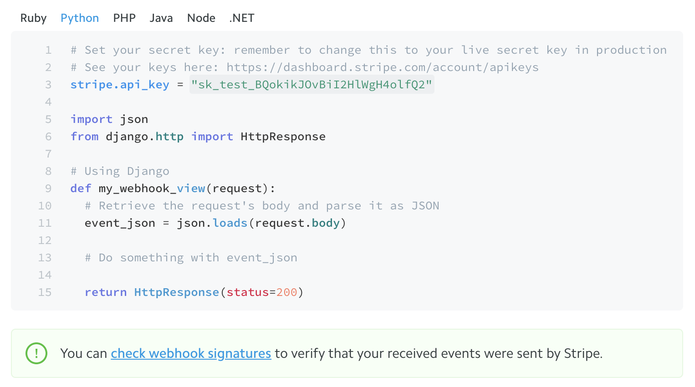

In diving deeper to find vulnerabilities in bug bounty programs, it is necessary to search for functionality not visible to the end user. Payment webhooks are one example, used by payment providers such as Stripe or Braintree to notify websites about updates to a user's subscription details. What's important is that a user never interacts with these webhook endpoints — all communication occurs directly between the payment provider and the server. This means that all too often a bug bounty hunter never even thinks to test against webhook functionality, missing out on potentially dangerous exploits.
Finding
While testing a site that offered a monthly subscription, I happened across the company's internal API documentation. One endpoint that immediately caught my eye was a PUT request to /api/webhooks/stripe. Based on my prior experience with payments providers, I wondered if I could send a fake request to this endpoint that would trick the website into thinking I paid.
Sending an empty JSON request returned an error. After looking into the format Stripe uses for webhooks, I sent the following body:
{
"payment": {
"status":"success",
"provider":"stripe"
},
"id":"..."
}The server responded with a success:
{
"id":"...",
"amount":1,
"status":"success",
"provider":"stripe"
}
And just like that, my account was authorized and appeared as having a paid subscription. This got me thinking: how often is such a vulnerability overlooked, and what are payment providers doing to prevent this?
Prevention by Payment Providers
Payment providers have the ability to prevent this vulnerability from ever happening, so it's surprising that endpoints do go unprotected. Braintree is an example of the right way to do things: users must parse the incoming webhook through Braintree's library, which automatically validates the request and extracts the JSON body. This way, webhook endpoints are secure by default, and cannot be spoofed by attackers.
Stripe, the payment provider used by the company, is a little less foolproof when it comes to webhook security. Although Stripe does mention verifying webhook signatures, this is only as a sidenote, and there is little overall emphasis on the importance of ensuring that webhooks originate from Stripe. The example code listed in the documentation doesn't include any signature verification, instead directly parsing the JSON request.
Not being secure by default is a tricky route. Users are likely to take the path of least resistance when creating payment integrations, meaning many will never verify incoming signatures.
Recurly, another subscription payment provider, offers HTTP Basic Authentication to share a secret between the servers. Again, one has to ask if users will actually go through the trouble of verifying a shared secret. Additionally, Recurly offers a list of IP addresses that webhook requests will originate from. However, this alone is not sufficient: what if, for instance, an attacker creates a separate Recurly account to send malicious, but valid, webhooks?
Lastly, BitPay, a service to accept bitcoin payments, states, "BitPay does not sign IPNs, so the information in the payload should not be trusted outright." Perhaps there's something to be said for being transparent about a lack of security — users, after all, are much more likely to question their security after reading this.
Discovery
An immediate cue to test for payment-related webhook vulnerabilities is when a company offers a monthly subscription. Depending on the payment provider (as outlined above), the site may not have implemented sufficient protection against attacks.
Some ways to find webhook endpoints:
- Search JavaScript files for "webhook" or "payment". Companies may expose internal endpoints without realizing it.
- Look through the organization's GitHub repos or similar to find references to webhooks.
- The format for webhook endpoints usually follows a similar form, so it's worthwhile to try visiting different API endpoints such as
/api/stripe/webhook,/api/payments/webhook,/api/stripeWebhook, etc.
Conclusion
It goes without saying that verifying payment webhooks should be the default for any sensitive actions. Payment providers give their customers methods to protect against such attacks, but depending on the provider this still requires some effort from the customer.
In the meantime, why not start checking to see if a payment endpoint has been left misconfigured? And this isn't just limited to payments — any incoming webhook notifications for any service should be verified.